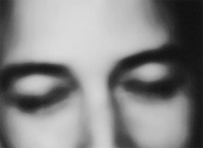
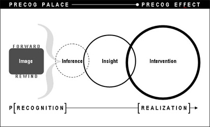
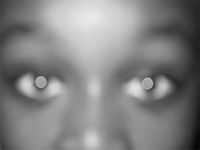

1000 DAYS OF THEORY
Among Precogs
Nate Burgos

[photo: Michelle Litvin]
"Truth is the vision closed eyes see."
-- Octavio Paz
We are among precogs. They capture our chatter of streaming unexamined life. Aggregating this chatter is their endowment. Parsing it for possibility
is their pursuit. They submerge themselves in stories and provoke them with eyes wide open. Their trajectory is truth. Their movements are uttered by
those monitoring the waves and mining their depth. Their thoughts are fables of forecast. They cause ripples in the raging information landscape of
memory.
We see them.
They see us.
Science fiction writer Philip K. Dick [1] introduced this perceptive species. Though described feeble in body, their talent is their minds, a gift
that keeps giving. They scour scenes of possibility. Scenes can be deemed units of possibility, constituting a messy space, notorious for paths upon
which footfalls of humans and mystery intersect. This intersection is the primary circuit of possibility, a realm of hyper-transient boundaries.
Possibility is trickery because it leads to a fixative we adore and fear: Reality. Gamut of life events -- near and far, fuzzy and clear -- charges the
craniums of precogs. Their mind's eyes are perpetual play heads. What develop within their hemispheres are reels of revelations:
Who are the perpetrators?
Who are the manipulators?
Who are the instigators?
Who are the agitators?
Who are the liaisons?
Who are the punishers?
Who are the liberators?
Who are the violators?
Who are the trespassers?
Who are the gatekeepers?
Who are the power brokers?
Who are the equalizers?
These role players and their accomplices ignite loops of anthropo-moments. Without which there is no news, no life. Precogs are creatures of
scenarios, patched together into a bleeding montage of awesome narrative magnitude. Its mass keeps imploding into puzzles. Most perplexing of these is
what tests the sanity of humanity:
What is the meaning of life?
The montage running in the precog palace reinforces a reality essential to living: We are worthless without conflict. Projections haunt precogs. Their
canvases are splashed with dots of plots, hazy narrative bitmaps, visceral in vagueness and relentless in magnetism toward realism. What do these
visions foretell? Precognitive visions remind me of Gerhard Richter's canvases. Critiqued as an artist who defies 'isms', he paints journalism, a
discipline dedicated to realities, from tsunamis to hackers, from lawsuits to gridlock, from slander to slaughter. What could happen is its ultimate
inference. This is the precogs's inheritance -- An inference-interface whose inquisitive kernel is its pulse and ultimate data prompt:
Do you see?
Richter's pictures point to events, composed of human artifacts, from photographs to postcards, anchored in the past but re-apply to the present. They
are rooted in reality and reverberate with echoes of foretelling. Oscillating between past and present into an interpretive pendulum is Richter's
effect. Provoked to seeking connections among elements of Richter's compositions is the result. Such action can prove futile in abstract
representations, but the realism transforms it into an attempt to quell human oblivion:
His work asks people to think freshly and not romantically about control versus freedom, austerity versus exuberance, faith versus skepticism: about
what we can trust in what we see.[2]
What we see is who we can be. As Richter's images allude, possibility shifts between mirage and milestone, that is, fallacy versus truth, two states
never to be denied. Without these regions, there is no news, no life. Precogs listen to the interaction between these states, vibrating like a vacuum
whose conclusion remains open-ended. They amplify the appointed times of transition affecting our lives. Submerged in filmic R.E.M., they push their
refrain:
Do you see?
Seeing the possible to spearhead its prediction was the precogs's fundamental purpose in Philip K. Dick's literary template. Precogs supplied
coordinates to help dodge destruction, an advanced thickener to a news jet stream becoming more metastatic in its growth from one re-purposed media hub
re-routed to another. Our environment is a consolidated media event sustained by multiplying headlines of human (mis)calculation. The headlines's body
of metacontent ripples throughout the precogs's bath of paradox: "With so much ease-of-beauty in the world, why do people kill?" The killing spree
flutters like scavenger pigeons landing from one human precipice in society to another. Images, high in murderous contrast, flicker into a perpetual
pattern of anthro-cognition, constructed and reconstructed, zoomed in and zoomed out, accelerated and decelerated, paused and played, and paused
again. Never stopping. More than report, the precogs react to the continuity of (un)consciousness. As poet Jorie Graham testifies, "You don't
necessarily know what you're looking for, but you know that you're looking."
Scanning scenes is characteristic of our age of blur. The cinema verité of life yields a striking convergence of images whose rapid representations of
lives, lost and found, destroyed and resurrected, consumes our navigation of a world ruled by proximity adjacent to possibility. Reality's
incarnations are around the corner, in a room, in the forest, underneath, above, in corridors, throughout villages and cities. Their turning into
apparitions is at the core of blur. Life's images multiply and overlap in instant succession, from one scene to another like fleeting keys on a piano.
Once visible moments are released, they are reshaped, reborn, never the same again. They are blurred. To cope with this condition, we toggle between
fast rewind and fast forward, tempos of forecast to pinpoint the possible in order to glean a life-affirming, even life-saving, prediction. Amidst all
the traffic of life, precog behavior (precog panning of scene to scene) paves passage from projection toward prediction.

The inverse is also compelling: Seeing the possible to facilitate its potential. This yields one of the most authentic archetypes driving
civilization. Precogs remind us of our vying for actuality. This lies at the core of the perpetual pattern of anthro-cognition conditioning our
environment. Precogs testify to the height of cognitive architecture and its LIFEcycle in every exponent of existence, by purpose or accident.
Realizing possibilities is human architecture. Artificial spaces, sprawling with machines and mechanisms, are made by such a human infrastructure,
extreme in its dimensional density and fueled by peoples' pursuit of values in the construct of mirage or milestone. This human validation model is
the precogs's domain. It is their primary source of stimulation: Listen to the waves of human needs and project timelines for fulfilling them.
Precogs connect to poets, philosophers, saviours, missionaries, innovators and evangelists. Their premonitions connect to the desperate state of the
information landscape. Fighting doubt and terror has and will always define the information landscape of civilization, plagued with words and images
of terror's victims. Visions spark the precogs's visual convulsions. They are sensitive to the unforgiving harshness of reality. They exhaust
themselves. Though precogs engage abrasive imagery, projected onto the roof of their temple like a Richter-rasterized installation, there is hope in
their ability to cope. They offer an ultimate lesson typically succumbed to oversight: State of society is a reflection of state of minds. The
reflection often bends into refraction. Precogs are a model for helping to prevent terror, even death. Their synaptic plug-in into the interconnected
lattice of dangerous futures provides sanctuary for us all. More than vigilant life-traffic repositories, they are agents of accountability in a world
whose consciousness is constantly challenged. They incite us to be life-traffic controllers. They help save us from ourselves and from each other.
According to the painter Paul Klee, "One eye sees, the other feels." In so doing, precogs help us see that which is more than a side of us: We are all
precogs.
"Better keep your eyes open..."[3]

[photo: Michelle Litvin]
Notes
---------------
[1] Philip K. Dick was inducted into the 2005 Science Fiction Hall of Fame. Also inducted was filmmaker Steven Spielberg who directed the film
adaptation of Dick's short story "The Minority Report."
[2] Kimmelman, Michael. "Gerhard Richter: An Artist Beyond Isms," New York Times, January 27, 2002.
[3] Philip K. Dick's short story, "The Minority Report."
--------------------
Nate Burgos is principal of Nate Burgos, Inc., a design consultancy. In addition to his design practice, he is an aspiring screenwriter. He
sustains design portal designfeast.com.
--------------------
Photography: Archi-ethnographer Michelle Litvin is an art and documentary photographer. Among numerous projects, her photography
of the Boeing 737 workspace in Seattle, Washington, appears as a cover story of the June 2005 issue of METROPOLIS magazine. Her online portfolio is
www.michellelitvin.com